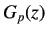
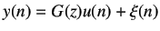
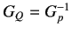
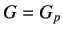

Next: Steps for Designing IMC Up: Implementing Internal Model Controller Previous: Implementing Internal Model Controller
Let the transfer function of the stable plant be denoted by  and its model is denoted by  . Hence
. Hence
|  | (8.1) |
For noise rejection with y=0, we require
 and , i.e., for stable  we require
an approximate inverse of G. Also, for internal stability, transfer function between any two points
in the feedback loop must be stable [1].
we require
an approximate inverse of G. Also, for internal stability, transfer function between any two points
in the feedback loop must be stable [1].